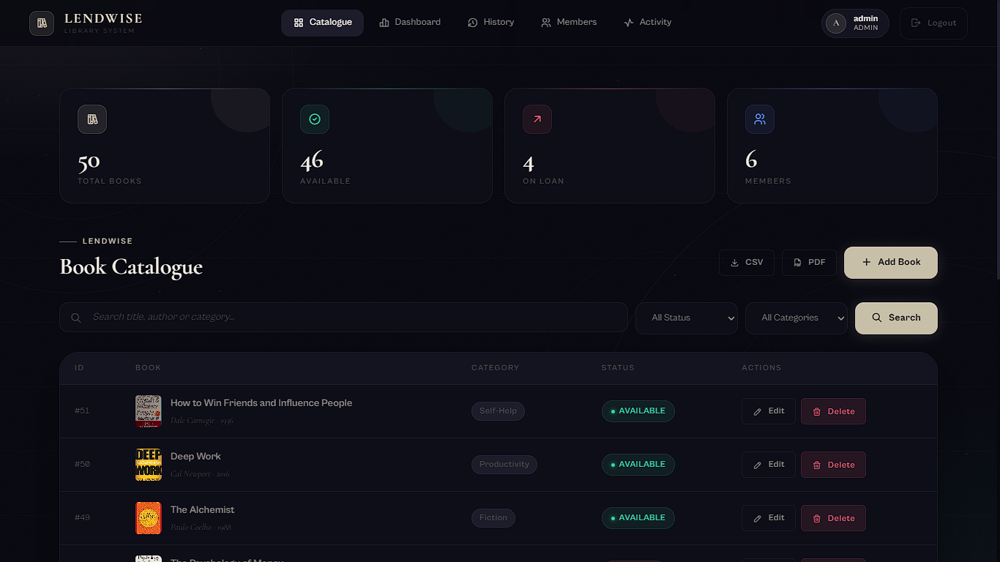

Library Management System
A full-stack Flask and MySQL application that replaced a college library's manual borrow/return tracking with a live, role-based system for members and librarians.

Replacing manual record-keeping with a live system
Members and librarians previously relied on paper logs and manual fine calculation, taking several minutes per checkout and requiring end-of-week reconciliation. This system introduces role-based accounts, a real-time borrow/return engine, automated overdue fine calculation, and email-based reminders — cutting checkout time to under 10 seconds and removing manual fine disputes across 500+ tracked loans.
How it's built
A normalized MySQL schema separates active loans from return history, keeping overdue and fine-calculation logic simple instead of querying one large mixed table.
Role-based sessions distinguish members from librarians at the route level, so administrative actions like adding books or waiving fines are gated server-side.
Gmail SMTP handles reminders and verification emails, ReportLab generates PDF reports, and a MySQL connection pool keeps queries efficient under load.
What I'd do with more time
Refactor the route structure into Flask Blueprints as the module count grows.
Add automated testing around the fine-calculation and borrow/return logic.